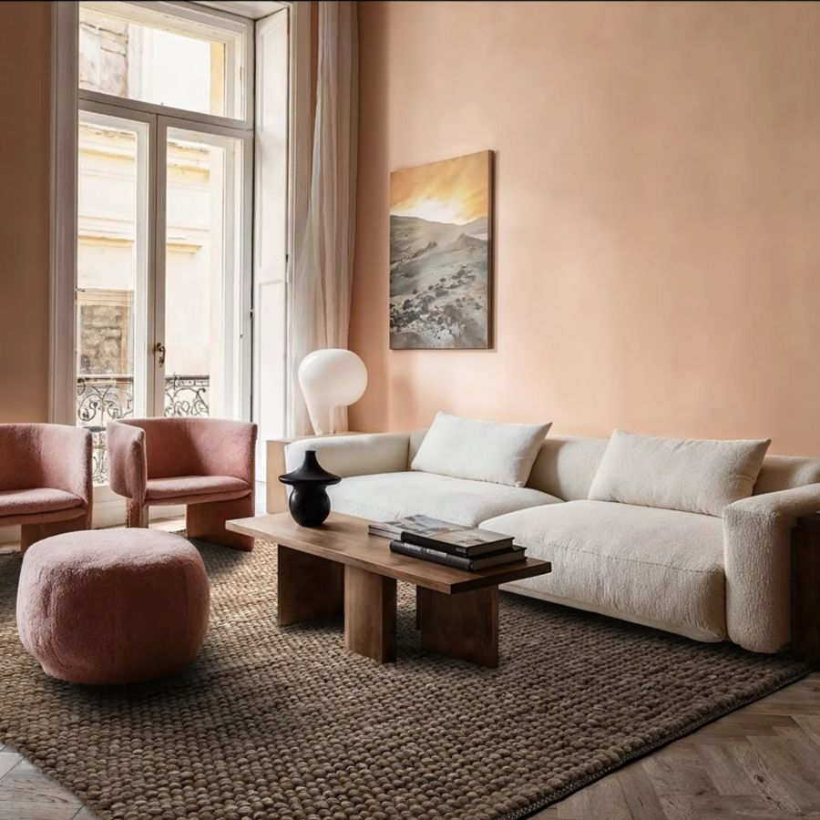
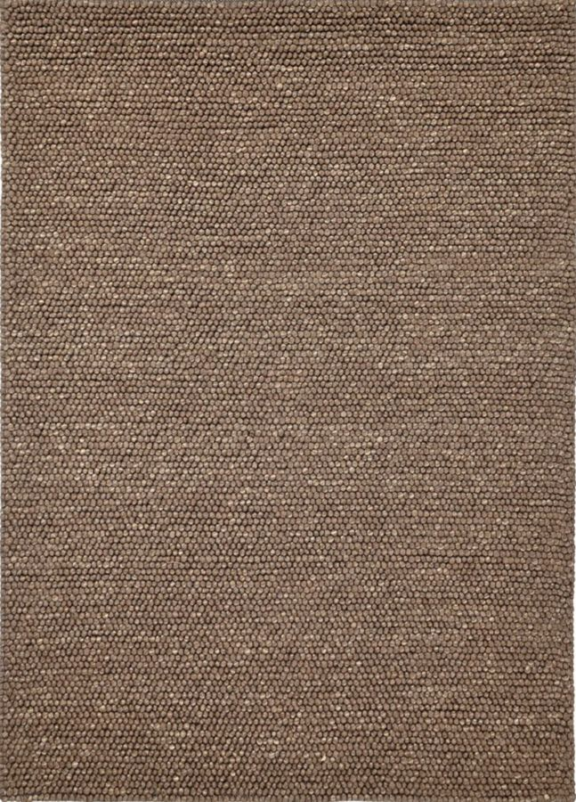
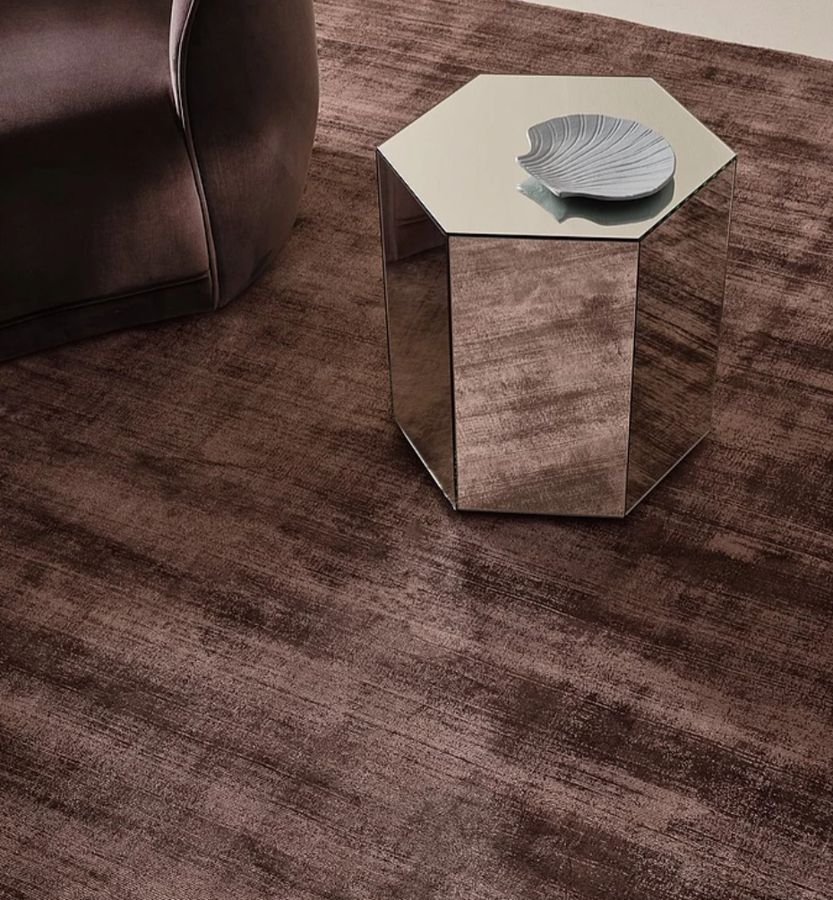
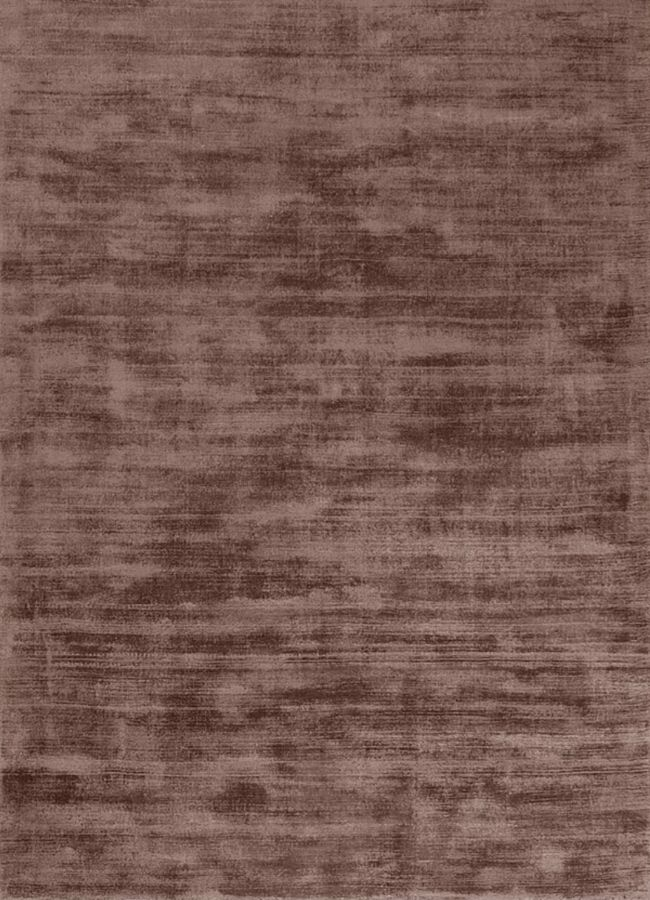
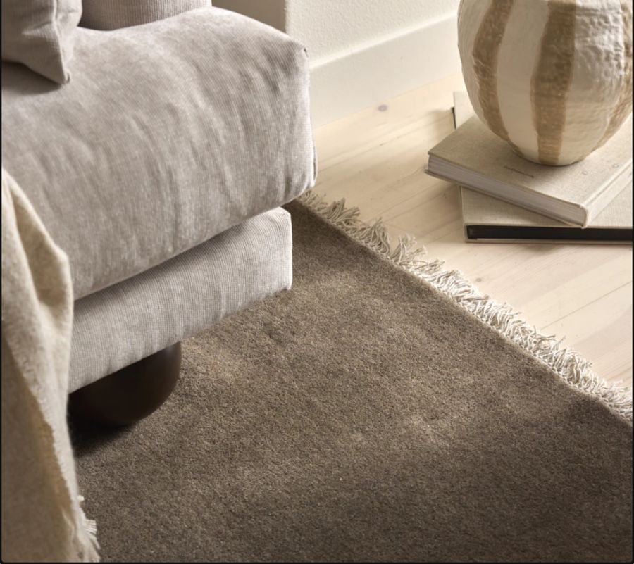
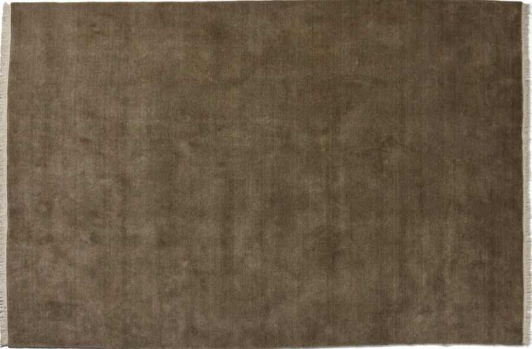
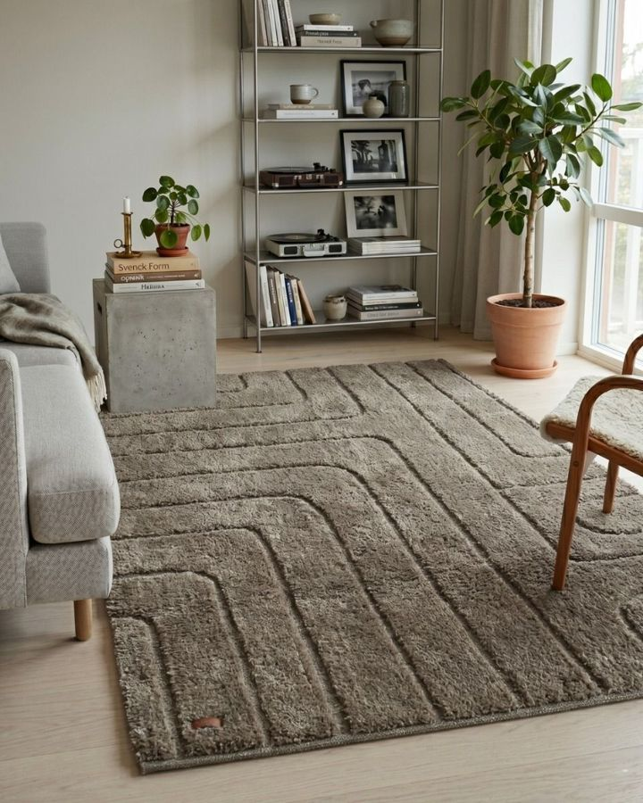
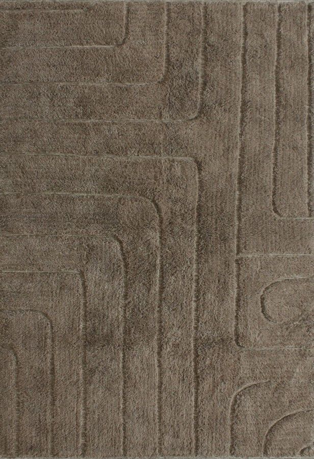

Alternativ 1 · Trendcarpet
Avafors Wool Bubble
Brun/beige, ull
10 158kr
- 240 × 240 cm
- 4 179 kr
- 240 × 340 cm
- 5 979 kr
- Total yta
- 13,92 m²
- Pris per m²
- 730 kr
Inredning · Vardagsrum
Fyra alternativ med samma matta i två storlekar, en vid soffan och en vid matbordet. Priserna gäller 5 november 2026.


Alternativ 1 · Trendcarpet
Brun/beige, ull
10 158kr


Alternativ 2 · Jotex
Brun, viskos
7 998kr


Alternativ 3 · Mio
Chokladbrun, ull
9 490kr


Alternativ 4 · Semattor
Taupe, ull
5 098kr
Svep åt sidan för att se alla kolumner.
| Alternativ | Storlekar och pris | Totalt | Yta | Per m² | Storlek | Material | Frakt och retur |
|---|---|---|---|---|---|---|---|
| TrendcarpetAvafors Wool Bubble, brun/beige |
240 × 2404 179 kr
240 × 3405 979 kr
|
10 158 kr | 13,92 m² | 730 kr | Fördel Den större storleken ger mer yta, 4,24 m² mer än Jotex och Mio. |
80 % ull, 20 % bomull. Handgjord i Indien, flatvävd bubbelstruktur, cirka 25 mm. | Gratis frakt och retur. Skickas inom 1–2 arbetsdagar. |
| JotexAnela, brun |
160 × 2302 999 kr
200 × 3004 999 kr
|
7 998 kr | 9,68 m² | 826 kr | 200 × 300 blir nätt och 160 × 230 blir precis. | 70 % viskos, 30 % bomull. Tuftad, lugg 0,6 cm, tjocklek 0,8 cm. | Fri frakt för postpaket över 649 kr. 30 dagars returrätt. Leverans 2–4 vardagar. |
| MioVidde, chokladbrun |
160 × 2303 495 kr
200 × 3005 995 kr
|
9 490 kr | 9,68 m² | 980 kr | 200 × 300 blir nätt och 160 × 230 blir precis. | 100 % ull. Handknuten i Indien, låg lugg och franskant. | Fraktkostnaden framgår inte av produktsidan. |
| SemattorJofrid Klay, taupe |
160 × 2301 599 kr
240 × 2403 499 kr
|
5 098 kr | 9,44 m² | 540 kr | 160 × 230 blir precis. 240 × 240 är samma storlek som hos Trendcarpet. | 95 % ull, 5 % bomull. Handvävd med reliefmönster, 7–17 mm. | Fri frakt och fri retur. Leverans 1–7 arbetsdagar. 14 dagars öppet köp. |
Alla ritningar har samma skala, så storlekarna går att jämföra direkt.
Totalpris för båda mattorna och vad varje kvadratmeter kostar.
Handgjord i Indien av 80 % ull och 20 % bomull. Mattan är flatvävd med en bubbelstruktur och ungefär 25 mm tjock.
Enligt butiken fungerar den med golvvärme så länge värmen är jämn och inte för hög.
Tuftad i 70 % viskos och 30 % bomull, med baksida av bomull och en gramvikt på 3 000 g/m².
Jotex skriver att viskos är känsligt för väta och att spill kan ge bestående fläckar. De rekommenderar fackmässig impregnering och att djupare rengöring görs som torrtvätt av fackman.
Betyg 3,8 av 5 från 31 betyg. Sidan visade den 5 november kampanjkoden MIX30, med 30 % på dyraste varan och 10 % på resten. Om koden gäller dessa mattor blir paret cirka 6 198 kr.
Handknuten i Indien av 100 % ull, med mjuk låg lugg, franskant och naturlig melering.
200 × 300 väger 20 kg. Mattan är inte vändbar och har ingen gummerad undersida, och Mio tipsar om mattunderlägg och hörnvakter.
Betyg 5 av 5 från 6 recensioner.
Handvävd av 95 % ull och 5 % bomull, med baksida av ull och bomull. Reliefmönstret gör att tjockleken varierar mellan ungefär 7 och 17 mm.
Semattor skriver att ullmattor är känsliga för robotdammsugare, husdjur och slitage från möbler. Lösa fibrer är normalt och minskar med dammsugning, men slutar kanske inte helt. De flesta fläckar går enligt butiken bort med frottéhandduk, ljummet vatten och mild tvål.
Inga betyg visas på produktsidan. Sidan visade den 5 november koden BLACKWEEKS med 15 % extra rabatt. Om den gäller dessa mattor blir paret cirka 4 333 kr.
Priserna är hämtade från butikerna den 5 november 2026 och kan ändras. Bilderna kommer från butikernas produktsidor. Tonerna i ritningar och staplar är tagna från produktbilderna och är ungefärliga.